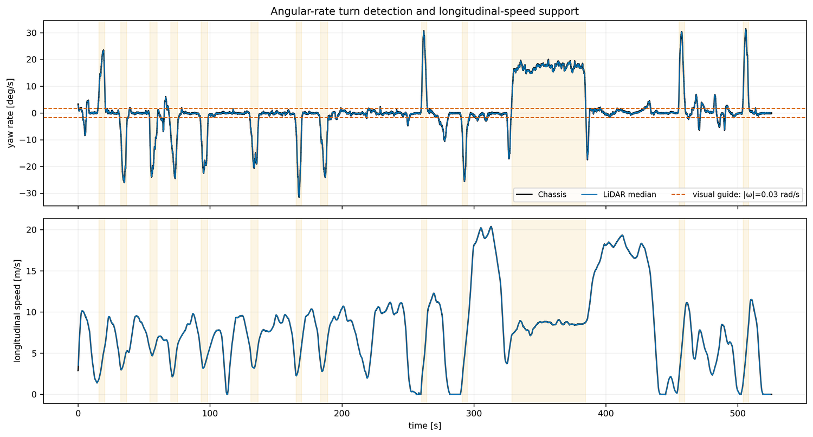
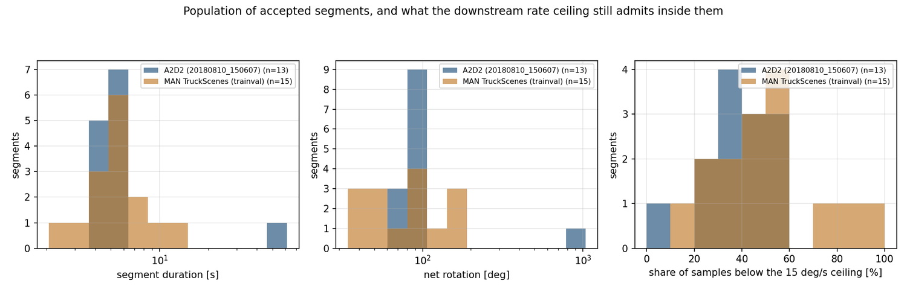

Turn segments in the data
The detector output for every drive: how many turns were found, how long they were, what fraction passed the quality test, how many survived intersection into common windows, and how that count tracks the final error.
1 What counts as a turn
A candidate turn opens when the magnitude of the yaw rate crosses the hold level and is kept only if it later peaks above the peak level and accumulates enough total heading change. Short gaps below the hold level are bridged rather than splitting the segment in two.
| Parameter | Value | Effect if raised | Effect if lowered |
|---|---|---|---|
| Hold level | 5 deg/s | segments shorten and lose their entry and exit ramps | straight driving leaks in and dilutes the regression |
| Peak level | 15 deg/s | gentle sweeping turns are discarded | weak-excitation segments enter and inflate the spread |
| Minimum accumulated yaw | 30 deg | fewer, stronger segments | many short segments with poor conditioning |
| Maximum internal gap | 0.3 s | one physical turn splits into several segments | two separate turns merge into one |
2 What was found in each drive
| Drive | Turns detected | Turn time fraction | Total turn yaw [deg] | Windows kept after intersection |
|---|---|---|---|---|
| Ford Log4 | 6 (4 left / 2 right) | 0.092 | 364 | 5 |
| Ford Log5 | 11 (7 left / 4 right) | 0.115 | 765 | 14 |
| Ford Log6 | 9 (5 left / 4 right) | 0.147 | 650 | 8 |
| Ford Log1 | 2 | — | 118 | 0 across four channels |
| Ford Log2 | 1 | — | 78 | not run |
| Ford Log3 | 1 | — | 48 | not run |
| A2D2 | about 12 per sensor | — | — | 11 |


3 Per-segment quality statistics
Every sensor-segment is scored against the consensus of the other channels before it is allowed into the estimate. Detection on each sensor's own twist yields 5, 12 and 10 turn segments in Log4, Log5 and Log6, which over four channels gives 108 scored sensor-segments. That count differs from the pose-profile turn count in the table above because the two detectors run on different signals.
| Log | Sensor-segments scored | Pass ratio | Angular cosine, median | Angular NRMSE, median | Forward-speed ratio, median |
|---|---|---|---|---|---|
| Log4 | 20 | 0.95 | 0.9958 | 0.095 | 1.003 |
| Log5 | 48 | 1.00 | 0.9961 | 0.089 | 1.012 |
| Log6 | 40 | 0.90 | 0.9961 | 0.090 | 0.987 |
| Log4 sensor | Segment | Duration [s] | Angular cosine | Angular NRMSE | Forward-speed ratio |
|---|---|---|---|---|---|
| RED | 0 | 3.27 | 0.9980 | 0.067 | 0.975 |
| RED | 3 | 7.39 | 0.9967 | 0.082 | 1.035 |
| YELLOW | 0 | 3.27 | 0.9960 | 0.094 | 0.973 |
| YELLOW | 3 | 7.39 | 0.9941 | 0.111 | 1.024 |
| BLUE | 0 | 3.27 | 0.9970 | 0.080 | 1.012 |
| BLUE | 3 | 7.39 | 0.9964 | 0.086 | 0.982 |
| GREEN | 0 | 3.27 | 0.9947 | 0.109 | 1.033 |
| GREEN | 3 | 7.39 | 0.9914 | 0.132 | 0.984 |
4 From per-sensor segments to common windows
Two sensors contribute one measurement only over the interval where both of their segments are active. The A2D2 run recorded that intersection in detail.
- 221 associated sensor-pair segments were logged across the directed pairs.
- 11 common windows survived intersection across all five sensors, averaging about 9.3 s each.
- 100 % of window boundaries required interpolation — no boundary landed exactly on a sample of both channels.
- Mean angular-rate cosine between the paired channels over the common windows: 0.9847.
- Mean absolute difference in accumulated heading between reference and target over a window: 0.048 rad (about 2.7°).
5 Window count versus final error
| Pool | Common windows | Relative Y MAE [mm] | RMSE [mm] | max [mm] | Median pairwise standard error [mm] |
|---|---|---|---|---|---|
| Ford Log4 | 5 | 32.91 | 36.53 | 63.52 | 19.9 |
| Ford Log5 | 14 | 24.72 | 27.59 | 47.96 | 22.7 |
| Ford Log6 | 8 | 8.01 | 9.10 | 12.77 | 34.6 |
| Ford Log4 + Log5 | 19 | 16.72 | 21.31 | 32.91 | 18.1 |
| Ford Log4 + Log5 + Log6 | 27 | 10.60 | 12.72 | 23.82 | 16.5 |
- More windows reduce the error, but not as fast as independent averaging would predict — the standard error falls only from 19.9 mm to 16.5 mm while the count rises five-fold, so the per-window errors are not independent.
- Log6 has fewer windows than Log5 yet a much lower error, so window count alone does not determine accuracy; per-window spread does.
- The per-window spread of the lateral estimate is about 50 mm standard deviation over 60 windows. That spread, not the estimator, is what sets the Ford error floor.
See also
- A1 · Turn-segment extraction — the detector itself
- B1 · Time alignment & windows — how the intersection and interpolation work
- Ablation catalogue — what changing the segment gates does, and does not, do